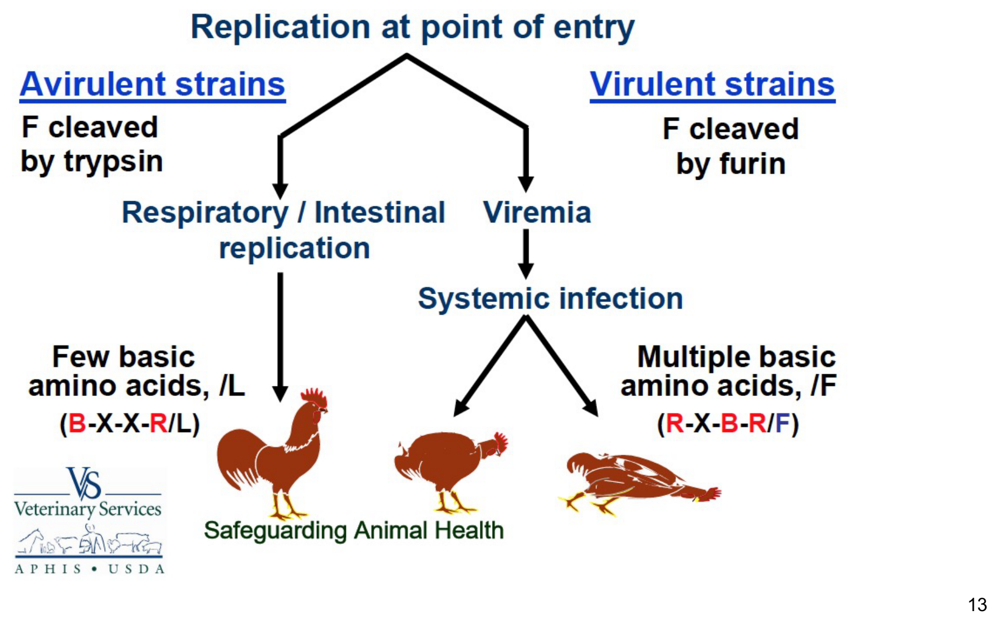
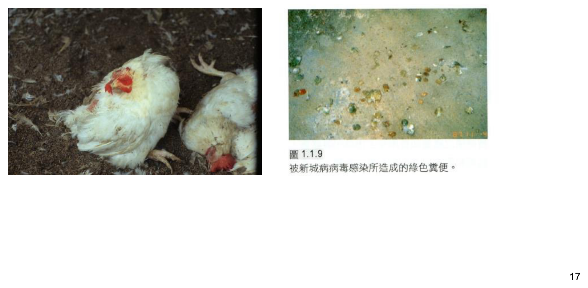
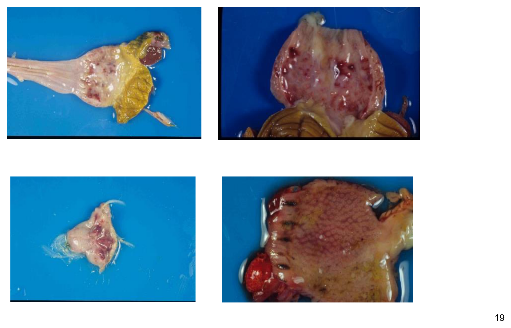
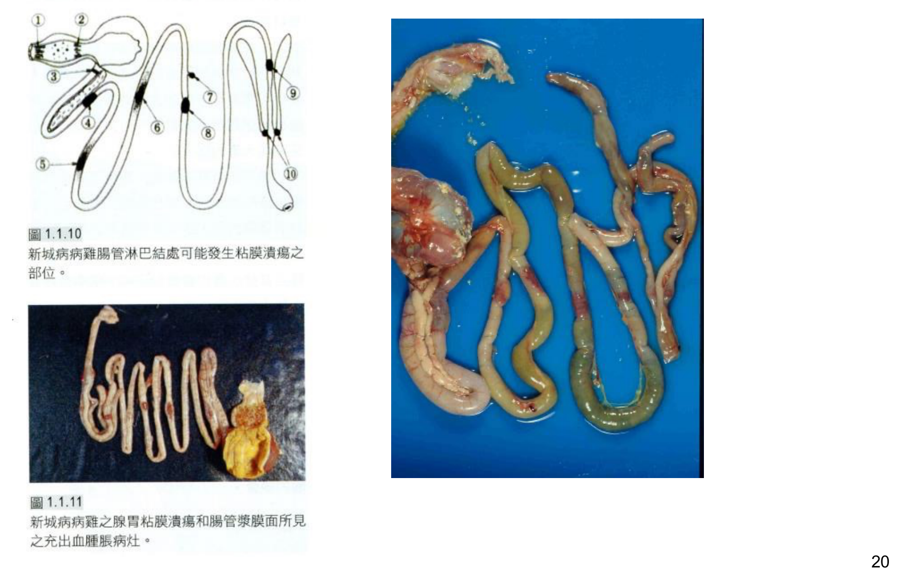

重點摘要
- ND 是台灣甲類動物傳染病、OIE 法定通報傳染病（比 IB 的乙類分級更嚴重），且宿主範圍極廣——可感染雞及其他 250 種以上鳥類。「傳染病分級」與「宿主範圍」是禽病學中 ND 最先要建立的兩個座標。
- NDV 只有一個血清型，但有五種病原型，病原型由 F 蛋白切位的胺基酸序列決定：強毒株（內臟強毒型 vvND 死亡率近 100%；神經強毒型 nvND 死亡率 10–90%）的 F0 切位具多個鹼性胺基酸，可被全身廣泛存在的蛋白酶切開而擴散全身；弱毒株（中間毒型、弱毒型）F0 切位缺乏多個鹼性胺基酸，只能被侷限於呼吸道與消化道上皮的胰蛋白酶切開，因此只在這兩個系統增殖——這正是弱毒株（B1、La Sota）可以安全製成疫苗的分子機轉。
- WOAH 對「新城病」有明確的正式判定標準，不是所有 APMV-1 感染都叫新城病：須符合腦內接種病原性指數（ICPI，1 日齡雛雞）≥ 0.7，或 F2 蛋白 C 端具多個鹼性胺基酸且 F1 蛋白 N 端第 117 位為苯丙胺酸（phenylalanine）——這是法規定義與國考的常見出題點。
- 內臟型與神經型的病程與病變邏輯不同：內臟型（亞洲型）主要病變在腸道（腺胃乳突部、十二指腸、空腸、迴腸、盲腸扁桃潰瘍出血壞死），極急性者可能無症狀猝死，死亡率近 100%；神經型（美洲型）先出現呼吸道症狀與產蛋下降，1–2 天後才出現扭頸等神經症狀，死亡率因日齡而異（大雞 10–50%，小雞可達 90%）。
- 典型消化道出血病變雖為 ND 特徵，但需與 AI 鑑別診斷——AI 病毒感染也會造成腺胃出血；台灣有些免疫過的病雞因抗體保護，內臟病變不明顯、僅出現神經症狀而無肉眼可視病變，此時須靠病毒分離才能確診，不能只憑肉眼病變排除 ND。
- 台灣三次大流行的具體數字是國考常考的時間軸：1968–1969 年（調查 60 萬隻、發病 15 萬隻、死亡 8 萬隻）、1984–1985 年（調查 460 萬隻、發病 270 萬隻、死亡 56 萬隻）、1994 年 12 月至 1995 年 4 月（死亡 90 萬隻以上）——三次規模遞增再趨緩，反映台灣防疫體系與疫苗接種策略的演進。
- 免疫策略的核心邏輯是「單一血清型使弱毒疫苗可交叉保護所有病原型」：點眼或噴霧接種雖不一定使全身抗體大幅升高，但能誘發有效的局部免疫；點眼接種因逐隻給藥、劑量一致、漏失率低而被視為較佳的接種方式；高風險強毒疫區則須採用活毒＋死毒併用的計畫。
- 人畜共通感染極為輕微，是低致病力人畜共通病的代表：感染者多為實驗室工作人員、屠宰場員工、疫苗施用者，症狀通常僅結膜炎（3–4 天），1–2 週內完全康復，血清中和抗體力價低、HI 抗體通常為陰性——這組「職業暴露＋輕微自限性症狀」的描述是公衛章節的常見考點。
病原學：病毒分類與病原型 Virology & Pathotype
新城病由第一型禽類副黏液病毒（Avian paramyxovirus 1; APMV-1）所引起，是高傳染性之惡性傳染病，可感染雞及其他 250 種以上的鳥類，感染範圍極廣。
疾病背景
- 1926 年首先於英國新城鎮發現，台灣於 1940 年發現病例，爾後不斷流行
- 目前 ND 為台灣甲類動物傳染病，也是 OIE（WOAH）之法定通報傳染病
病毒分類與特性
| 項目 | 內容 |
|---|---|
| 科／屬 | 副黏液病毒科（Paramyxoviridae）／ Avulavirus 屬 |
| 基因體 | 負義單股 RNA（(–) ssRNA），約 15 kb |
| 顆粒 | 150–300 nm，具封套（Enveloped） |
| 特徵構造 | 病毒破裂後釋出鞭炮或魚骨狀的核蛋白（nucleocapsid） |
| HN 蛋白 | 負責辨識細胞受體（cellular receptor）、凝集紅血球 |
| F 蛋白 | 負責與細胞膜（cellular membrane）融合 |
APMV 命名法
目前至少已發現 20 種 APMV，命名依序包含：①血清型、②分離來源鳥種、③分離地點、④參考編號或名稱、⑤分離年份。
病原型分類（NDV／APMV-1）重要
NDV 只有 1 個血清型，但有 5 個病原型（也可將 1、2 及 4、5 各合併，簡化為強／中／弱三種病原型）：
| 病原型 | 又稱 | 特徵 |
|---|---|---|
| ① 內臟強毒型 | 亞洲型，viscerotropic velogenic ND, vvND | 主為腸管出血，死亡率通常達 100% |
| ② 神經強毒型 | 美洲型，neurotropic velogenic ND, nvND | 主為呼吸及神經症狀，死亡率大雞 10–50%、小雞可達 90% |
| ③ 中間毒型 | Mesogenic | 只在小雞發病，可作為二次免疫的疫苗 |
| ④ 弱毒型 | Lentogenic | 供作疫苗（B1、La Sota） |
| ⑤ 無病原性型 | — | — |
致病機轉：F 蛋白切位與毒力 Pathogenesis: F Protein Cleavage & Virulence
ND 的病原性強弱由 F（融合）蛋白切位的胺基酸序列決定，是理解病原型分類、疫苗安全性與 WOAH 診斷定義的分子基礎。
F 蛋白活化機轉
剛形成的 F 蛋白稱為 F0，感染細胞前，F0 須被切開成 F1、F2 兩段，使 F1 N 端的融合胜肽（fusion peptide，一小段疏水性胺基酸）露出，病毒才能與細胞膜融合、感染新細胞。
| 毒株類型 | F0 切位特徵 | 可被切開的蛋白酶 | 感染範圍 |
|---|---|---|---|
| 強毒株 | 切位有多個鹼性胺基酸 | 可被全身廣泛存在的多種蛋白酶切開 | 病毒可散佈全身各組織，於各臟器造成病變而死亡（Systemic infection） |
| 弱毒株 | 切位沒有多個鹼性胺基酸 | 只能被胰蛋白酶（trypsin）切開 | trypsin 只存在於呼吸道及消化道上皮，因此弱毒株只在此二系統增殖 |
※ 用細胞培養弱毒株病毒時，需額外添加 trypsin 才易生長，正是此機轉的實驗室應用。

WOAH「新城病」正式判定標準重要
依 WOAH 定義，禽類感染 APMV-1 病毒須符合以下任一項毒力標準，才能定義為新城病爆發：
- (a) 病毒在 1 日齡雛雞的腦內接種病原性指數（Intracerebral Pathogenicity Index, ICPI）≥ 0.7；或
- (b) 病毒F2 蛋白 C 端具多個鹼性胺基酸（至少 3 個精胺酸或離胺酸，位於第 113–116 位），且 F1 蛋白 N 端第 117 位為苯丙胺酸（phenylalanine）
宿主、傳播與台灣流行病學 Host, Transmission & Epidemiology in Taiwan
ND 宿主範圍極廣、傳播途徑多元，台灣的三次大流行歷史是防疫演進的重要案例。
宿主範圍
雞、火雞、雉雞、珠雞、鵪鶉及鴿子皆有感受性；台灣曾由雞、雉雞、火雞、珠雞、鵪鶉、鷓鴣、鴿子、領角鴞、鴨及鵝分離到病毒。鴨感受性最低。在台灣，2–6 週齡肉雞多發生。
傳播途徑
吸入帶病毒顆粒的乾粉塵
病雞糞便含有大量病毒
被病毒汙染的飲水
—
鴿子、野鳥及水禽
弱毒株可垂直傳播，強毒株使胚胎中止無法孵化
🇹🇼 台灣 ND 流行史國考重點
- 1968–1969 年：調查 60 萬隻雞，發病 15 萬隻，死亡 8 萬隻
- 1984–1985 年：調查 460 萬隻雞，發病 270 萬隻，死亡 56 萬隻（規模最大的一次）
- 1994 年 12 月至 1995 年 4 月：發病死亡 90 萬隻以上
1926 年英國新城鎮首先發現本病，台灣於 1940 年發現病例，爾後不斷流行，目前 ND 為台灣甲類動物傳染病、OIE 法定通報傳染病。
臨床症狀與病理病變 Clinical Signs & Lesions
內臟型與神經型的病程與病變位置截然不同，是本節理解的主軸；肉眼病變需與 AI 鑑別診斷。
潛伏期與一般臨床症狀
潛伏期：5–6 天（亦有 2 天至 15 天以上者）。明顯精神沈鬱、呼吸困難、顏面水腫、綠色下痢便，5–7 天後死亡。
極急性者可能無症狀就死亡；主要病變在腸道，死亡率通常達 100%。
呼吸困難、喘息、食慾消失、產蛋下降；1–2 天後出現扭頸等神經症狀，死亡率 10–90%。

肉眼病變
- 氣管充出血
- 內臟型主要在腸道：腺胃乳突部、移行部出血；十二指腸、空腸、迴腸、盲腸扁桃潰瘍出血壞死
- 其他器官：心臟、肝臟、皮膚等出血點


典型的消化道出血肉眼病變雖為 ND 特異性表現，但 AI 病毒感染也會造成腺胃出血，需區別診斷。台灣有些病雞因有抗體保護，內臟病變不明顯，僅出現神經症狀而無肉眼可視病變，此時需病毒分離才能確定診斷。
組織學病變
| 系統 | 病變 |
|---|---|
| 呼吸道 Respiratory tract | 上呼吸道黏膜水腫、充血及炎症細胞浸潤，肺泡壁上皮細胞水腫、充出血 |
| 腸道 Intestinal tract | 腸黏膜出血壞死性病灶 |
| 神經系統 Nervous system | 非化膿性腦膜腦炎，伴隨神經元細胞變性、上皮細胞增生、淋巴球圍管現象（perivascular cuffing）、glial cell 浸潤 |
| 血管系統 Vascular system | 血管內皮細胞壞死，各器官充出血 |
| 淋巴系統 Lymphoid system | 淋巴組織（脾臟、胸腺、華氏囊）的退行性變化 |
| 生殖系統 Reproductive system | 卵泡萎縮，卵巢及輸卵管炎症細胞浸潤 |
診斷 Diagnosis
實驗室診斷流程包含採樣、病毒鑑定、序列分析與病原性鑑定；血清學檢查則依疫苗接種狀況而有不同用途。
實驗室檢驗流程
病原性鑑定：ICPI 試驗重要
腦內接種病原性指數（Intracerebral Pathogenicity Index, ICPI）：將病毒接種於一日齡雛雞腦內，連續 8 天觀察並記錄臨床評分（0＝正常、1＝患病、2＝死亡），計算每日總分後除以總觀察天數與雛雞數，即得 ICPI 值。依 WOAH 定義，ICPI ≥ 0.7 即符合新城病病毒毒力判定標準之一（詳見前節「致病機轉」）。
血清學檢查 Serology
最常使用的方法是 HI（血球凝集抑制試驗），其他有 VN（中和試驗）、ELISA、IFA。
血清學用於主動監測（偵測是否有野外病毒感染）
血清學用於監測疫苗抗體（評估免疫效力）
※ 雞隻的 HI 抗體力價與保護力呈正相關。
疫苗與免疫計畫 Vaccination Programs
ND 因五種病原型皆屬同一血清型，弱毒疫苗可提供廣效保護，是與 IB（血清型眾多、交叉保護差）最大的策略差異。
免疫策略總論
5 種病原型都屬同一種血清型，因此用弱毒株（B1、La Sota、clone 30 等）做疫苗即可保護雞隻免受強毒株感染。免疫方式以點眼或噴霧較佳——雞隻體內抗體雖不一定升高，但有局部免疫反應；點眼接種因可逐隻接種、漏失率低、劑量較一致，是較佳的接種方式。由於接種適期與途徑相似，商用 ND 活毒疫苗常與 IB 疫苗製備成混合疫苗。
肉雞新城病接種計畫
1 日齡進行活毒疫苗接種，激發上呼吸道黏膜局部免疫；免疫效力不高（約 2–3 週），僅侷限於上呼吸道。母源抗體會干擾 3 週齡內小雞的全身性免疫，但對局部免疫影響較小。
早期保護由母源抗體提供；第 1 劑活毒通常使用較弱毒株、溫和接種方式。成長期較長雞隻（土雞、仿土雞、有色雞）或高危險地區，通常需要第 3 劑補強。
活毒／死毒同時接種：活毒提供快速局部免疫反應，死毒提供較強且較持久的免疫反應；活毒經點眼接種，高危險區域必須進行補強接種。
蛋雞／種雞新城病接種計畫
有效激發產蛋期間黏膜局部免疫力；種雞群移轉給後代小雞的母源抗體較低、也較不一致。產蛋中雞群每隔 30–60 天補強一劑活毒（如 B1 株）以維持高免疫力。
避免產蛋期間使用活毒；種雞群可使後代小雞獲得高量且一致的母源抗體。
活毒／死毒同時併用接種計畫，用於發生強毒型新城病的高危險地區。
※ 此外業界也發展載體疫苗（vector vaccine）接種計畫（如 HVT-ND 重組載體疫苗），可於孵化場一次注射提供較持久的保護，是近年疫苗技術的發展方向。
疫苗接種後不良反應
接種 ND 活毒疫苗可能發生接種後反應，包括氣管囉音、呼吸道異音、眼結膜炎，以及增加對大腸桿菌的感受性等。接種後 3–5 天會發生這些反應，若無其他病原合併感染，病徵通常較輕微，且僅持續 3–5 天。
人畜共通與公衛 Zoonotic Potential & Public Health
ND 的人畜共通感染屬於低致病力、自限性的職業暴露疾病，與高致死率的禽流感形成鮮明對比。
人只有偶而被感染，感染者多為實驗室工作人員、屠宰場員工、疫苗施用者，引起的症狀很輕微：經過 1–2 天潛伏期，大都只發生 3–4 天的結膜炎，1–2 週後完全康復；血清中只含低力價中和抗體，HI 抗體通常為陰性。極少數報告提及咽喉炎、肺炎、輕微腦炎、眼周淋巴腺炎、耳下腺炎等症狀。
學習重點整理
考試／臨床實務角度的整理，複習前可先快速掃過本節，找出自己不熟的部分再回對應章節細讀。
練習題 Practice Quiz
涵蓋病原學、致病機轉、流行病學、臨床病理、診斷與疫苗各章節重點，先自己作答再點「顯示答案」核對，答錯的觀念請回對應章節重讀一次。
NDV 即 APMV-1，屬於 Paramyxoviridae 科 Avulavirus 屬，基因體為負義單股 RNA 約 15 kb，具封套。
NDV 只有 1 個血清型，雖有 5 種病原型，但因血清型相同，弱毒株製成的疫苗（如 B1、La Sota）可以保護雞隻免受所有病原型強毒株的感染發病，這與 IB 血清型眾多、交叉保護差的情況明顯不同。
病毒的 F0 蛋白必須被切開成 F1、F2 才能發生膜融合、感染新細胞。強毒株的 F0 切位含有多個鹼性胺基酸，可以被全身廣泛存在的多種蛋白酶切開，因此病毒可以散佈到全身各組織、在各臟器造成病變而死亡。弱毒株的 F0 切位沒有多個鹼性胺基酸，只能被胰蛋白酶（trypsin）切開，而 trypsin 只存在於呼吸道及消化道上皮，因此弱毒株的增殖範圍侷限於這兩個系統，不會造成全身性感染，這也是弱毒株可以安全製成疫苗的分子基礎。
胚胎矮小化捲曲是 IBV 病毒分離的特徵性所見，並非 WOAH 判定新城病的標準。WOAH 對新城病的正式定義是 ICPI ≥ 0.7，或 F2 蛋白 C 端具多個鹼性胺基酸且 F1 蛋白 N 端第 117 位為苯丙胺酸，符合任一項即可判定。
雞、火雞、雉雞、珠雞、鵪鶉及鴿子皆有感受性，台灣曾由多種鳥類分離到病毒，其中鴨的感受性最低。
第一次為 1968–1969 年，調查 60 萬隻雞，發病 15 萬隻，死亡 8 萬隻；第二次為 1984–1985 年，調查 460 萬隻雞，發病 270 萬隻，死亡 56 萬隻，是三次中規模最大的一次；第三次為 1994 年 12 月至 1995 年 4 月，發病死亡 90 萬隻以上。
內臟型（亞洲型）主要病變在腸道（腺胃乳突部、腸道潰瘍出血壞死），極急性者可能無症狀就死亡，死亡率通常達 100%；神經型（美洲型）則是先出現呼吸道症狀與產蛋下降，1–2 天後才出現扭頸等神經症狀，死亡率 10–90%。
典型的消化道出血肉眼病變雖為 ND 特異性表現，但 AI 病毒感染也會造成腺胃出血，需要區別診斷；此外台灣有些免疫過的病雞因抗體保護，內臟病變不明顯、僅出現神經症狀而無肉眼可視病變，此時更需要病毒分離才能確診。
血清學檢查最常使用 HI（血球凝集抑制試驗），其他方法還有 VN（中和試驗）、ELISA、IFA；ICPI 是病原性鑑定方法，非血清學檢查；病毒分離與 RT-PCR 屬於抗原偵測方法。
點眼或噴霧接種雖然不一定使雞隻體內全身性抗體大幅升高，但能誘發有效的局部（黏膜）免疫反應，足以保護呼吸道與消化道的黏膜表面對抗野外強毒株感染，這對主要經呼吸道、消化道感染的 ND 而言已足夠有效，且操作成本遠低於逐隻注射。點眼接種相較於噴霧的優點在於可以逐隻接種，因此漏失率低、每隻雞接種到的疫苗劑量也較為一致，噴霧接種則可能因霧化不均或個體吸入量差異而導致部分雞隻接種劑量不足。
發生強毒型新城病的高危險地區，建議使用活毒／死毒同時併用的接種計畫：活毒提供快速的局部免疫反應，死毒提供較強且較持久的免疫反應，兩者互補，且高危險區域必須進行補強接種以維持足夠的保護力。
人類感染 NDV 屬於低致病力的人畜共通感染，症狀通常很輕微，多為實驗室工作人員、屠宰場員工、疫苗施用者等職業暴露，大都只發生 3–4 天的結膜炎，1–2 週後即完全康復，血清中和抗體力價低、HI 抗體通常為陰性，極少數才有咽喉炎、輕微腦炎等報告。
接種 ND 活毒疫苗後可能出現的不良反應包括氣管囉音、呼吸道異音、眼結膜炎，以及增加對大腸桿菌的感受性等。這些反應通常在接種後 3 至 5 天發生，若無其他病原合併感染，病徵通常較為輕微，且僅持續 3 至 5 天；但若雞群同時存在其他呼吸道病原（如黴漿菌）或已有免疫抑制，反應可能加劇。
弱毒株的 NDV 可以垂直傳播（介蛋傳染），但強毒株因病毒可全身性擴散並造成嚴重病變，會使受感染的胚胎中止發育而無法孵化，因此強毒株實際上較難經由垂直傳播延續到下一代雛雞。